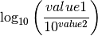
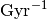

SamPy.db.sqlite.toPowerTen
SamPy.db.sqlite.generateSQLString
Enter search terms or a module, class or function name.
Calculates the specific star formation rate from a given (SAM) data.

This function can be passed on to slite3 connection
specific star formation rate in 
float or ndarray